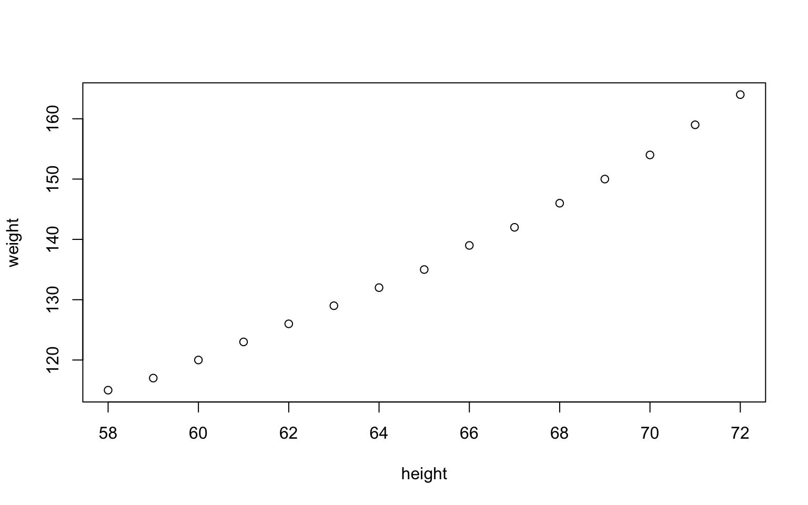

Speed vs. distance
Drive types of 234 cars

One cell = one card


One cell = one card




Least efficient
9
Most efficient
35
Average city mileage
16.86 mpg


hello


Least efficient
9
Most efficient
35
Average city mileage
16.86 mpg